05·06 현재 화면·부품 비교
전체 화면21개 · 부품 견본3개. 다이얼로그는 기존 화면 위에 겹친 대표 시안으로 표시하고, 추가 메시지만 옆에서 비교합니다.
05.02
기존 시안 · 최신 확정 설명 우선 05.02.01 프로필 수정 / 기본
05.02.01 프로필 수정 / 기본
06.01
기존 시안 · 최신 확정 설명 우선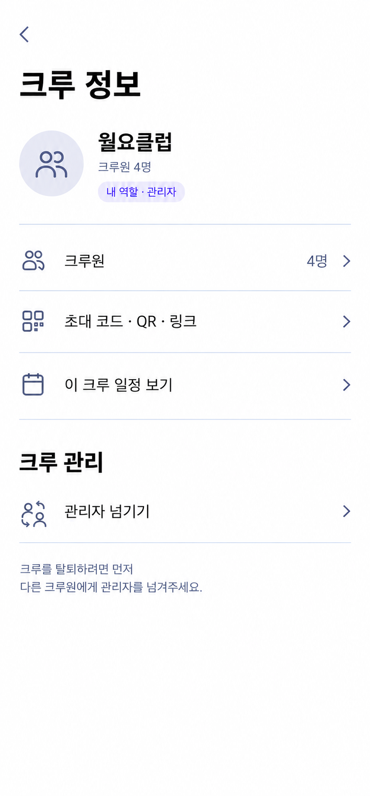
06.01.01 크루 정보 / 일반 회원 06.01.02 크루 정보 / 관리자
06.01.02 크루 정보 / 관리자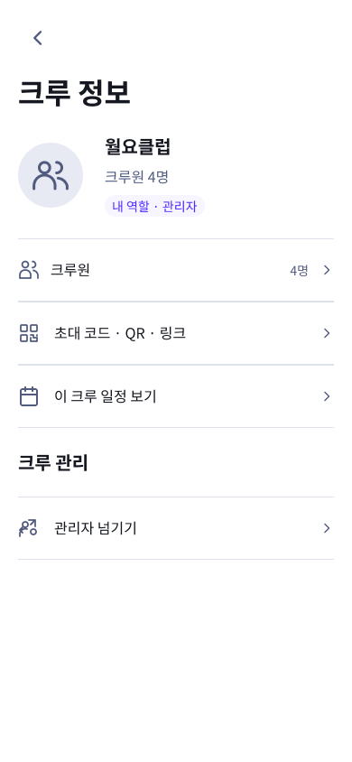
06.02
기존 시안 · 최신 확정 설명 우선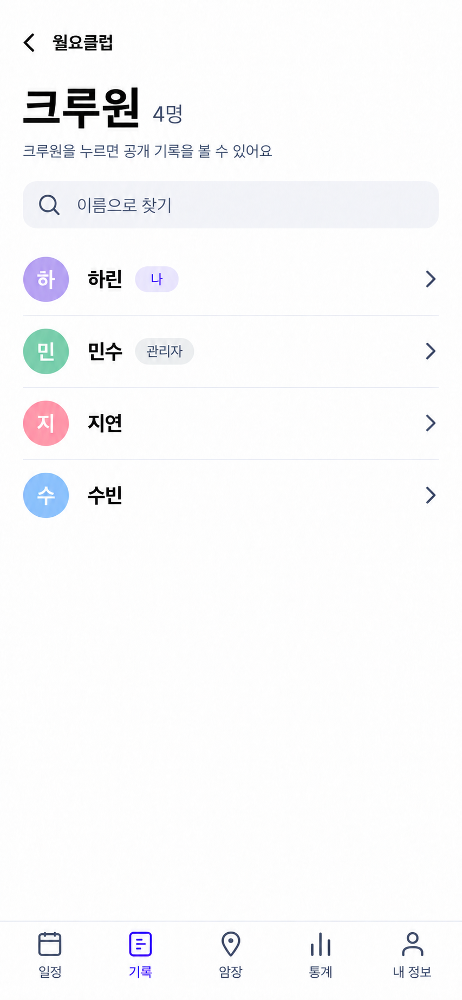
06.02.01 크루원 목록 / 기본 06.02.02 크루원 목록 / 검색 결과 없음
06.02.02 크루원 목록 / 검색 결과 없음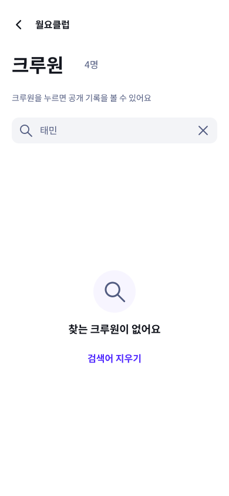
06.03
기존 시안 · 최신 확정 설명 우선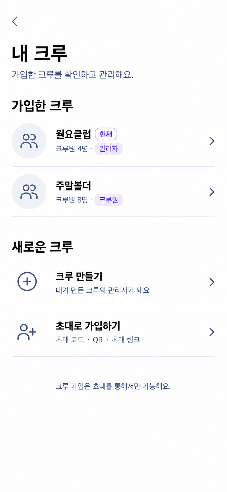
06.03.01 내 크루 목록 / 기본 06.03.02 내 크루 목록 / 가입 크루 없음
06.03.02 내 크루 목록 / 가입 크루 없음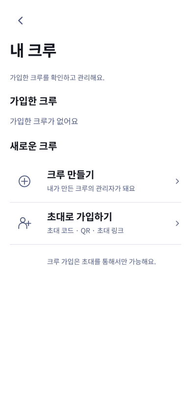
06.04
기존 시안 · 최신 확정 설명 우선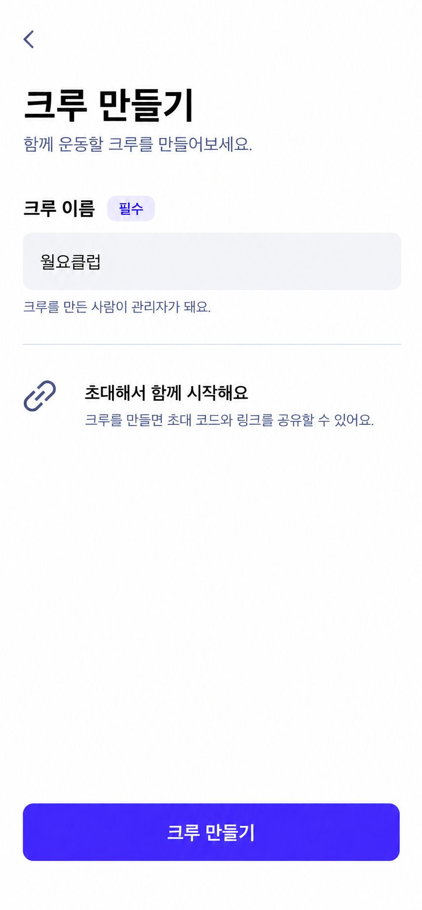
06.04.01 크루 만들기 / 입력 완료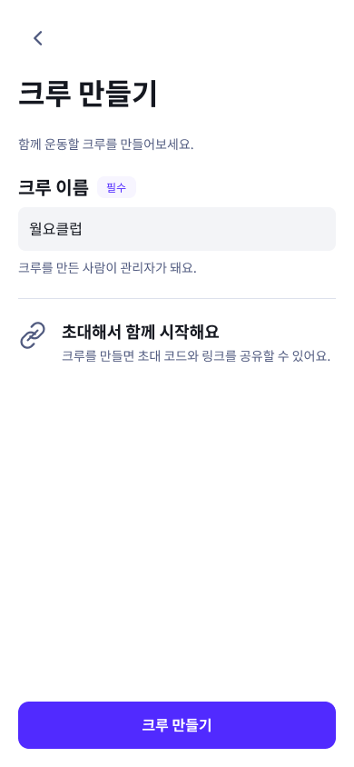
06.04 부품 상태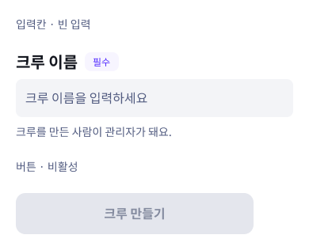
06.05
기존 시안 · 최신 확정 설명 우선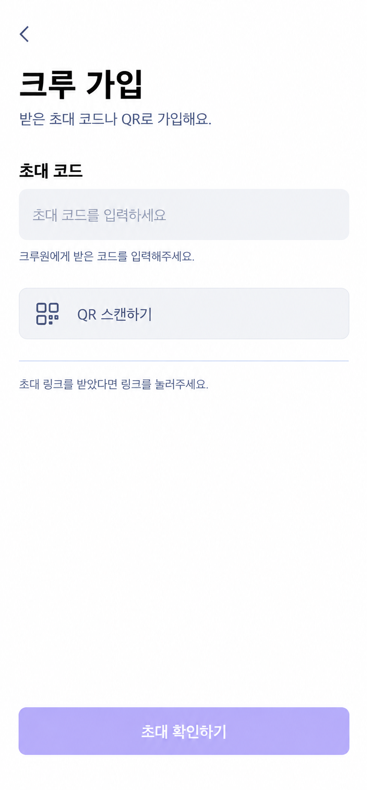
06.05.01 초대 코드 입력 / 빈 입력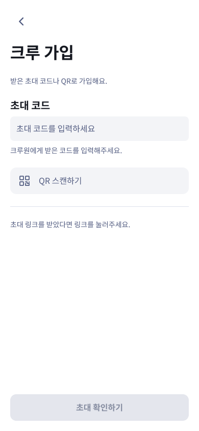
06.05 부품 상태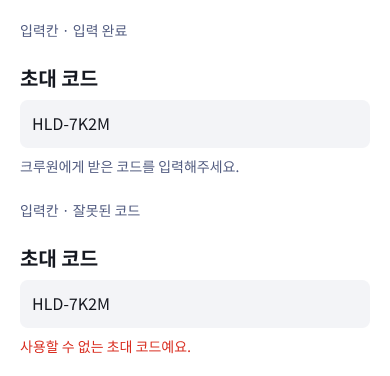
06.06
기존 시안 · 최신 확정 설명 우선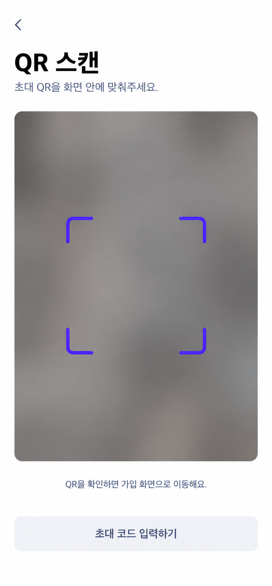
06.06.01 QR 스캔 / 기본 06.06.02 QR 스캔 / 다이얼로그
06.06.02 QR 스캔 / 다이얼로그
06.07
기존 시안 · 최신 확정 설명 우선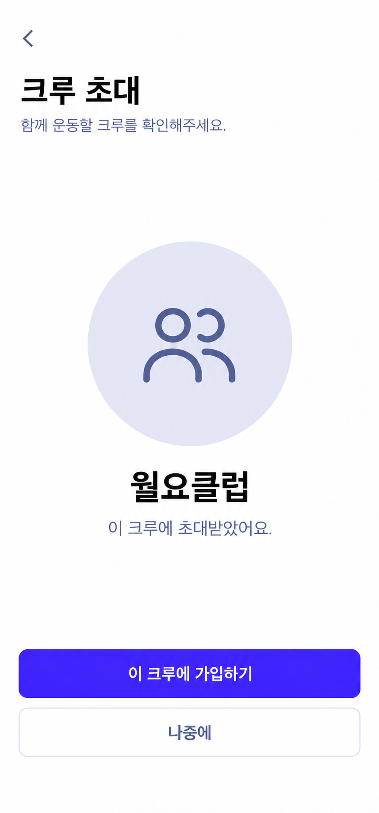
06.07.01 초대 가입 확인 / 기본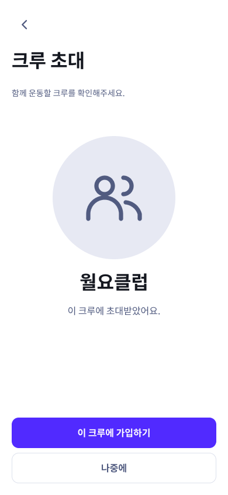
06.07.02 초대 가입 확인 / 다이얼로그 06.07 부품 상태
06.07 부품 상태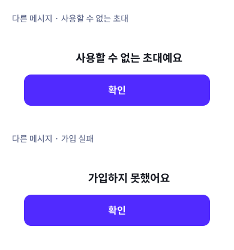
06.09
기존 시안 · 최신 확정 설명 우선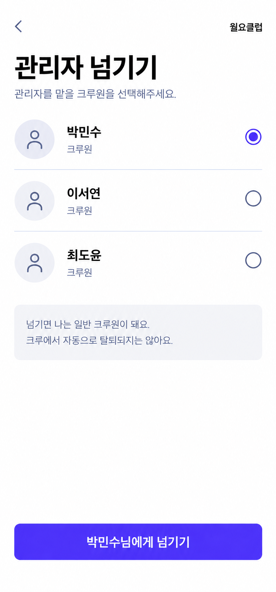
06.09.01 관리자 넘기기 / 선택 완료 06.09.02 관리자 넘기기 / 대상 없음
06.09.02 관리자 넘기기 / 대상 없음 06.09.03 관리자 넘기기 / 다이얼로그
06.09.03 관리자 넘기기 / 다이얼로그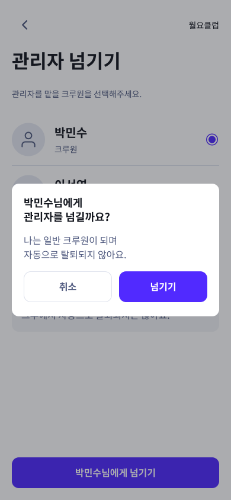